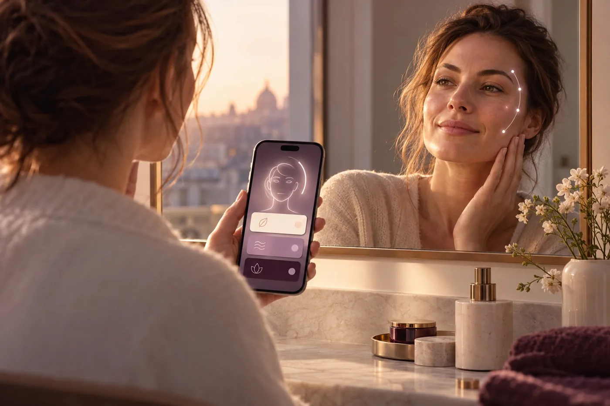
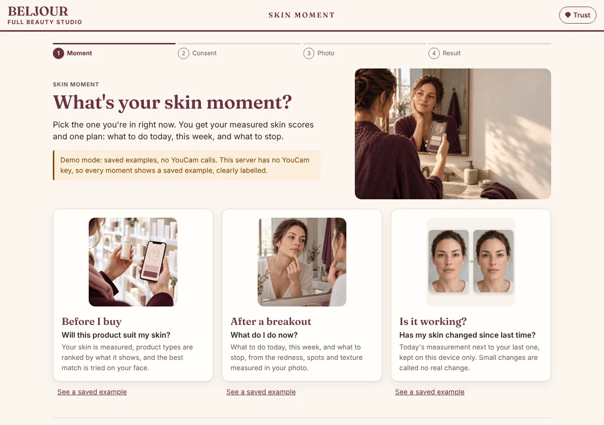
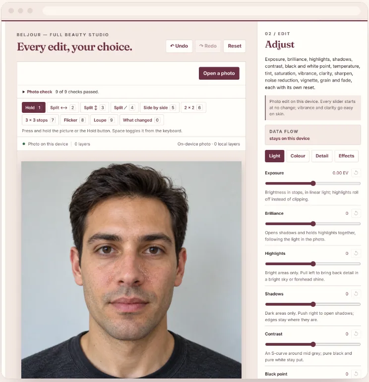
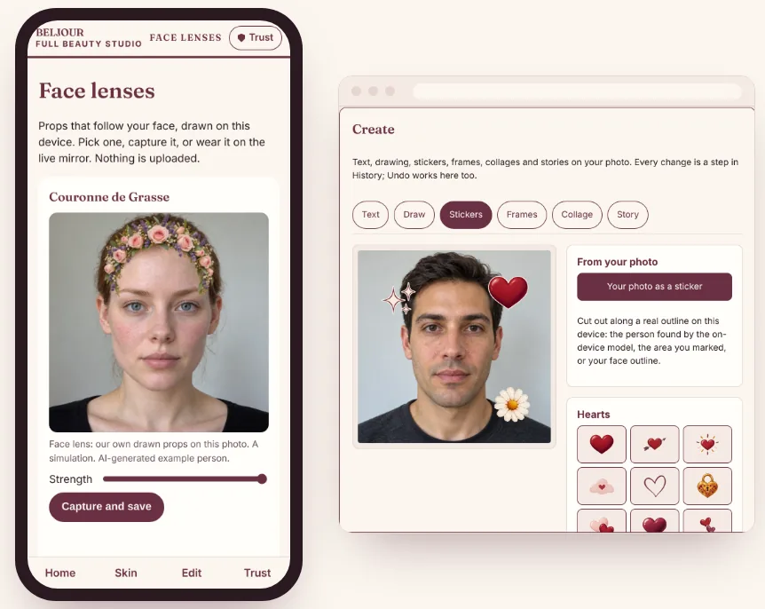
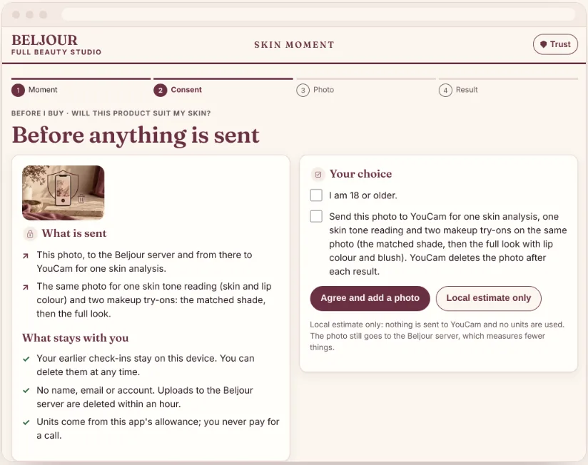

Pro photo editor
Light, colour, detail and effects; a colour mixer with skin-tone protection on by default; RGB curves; tap-or-paint selective adjust; crop, rotate, straighten and keystone. Every slider starts at no change.
Full beauty studio
Skin, makeup, hair, photo fixes, video and filters in one private studio, almost all of it our own code running on your device. Anything sent to an outside service asks you first.
Early web preview. On-device tools only; photos stay in your browser.

Counted from the app's own feature registry. Most features are tested on drawn and synthetic test images; quality on real faces is still being measured.
Featured · Skin Moment
People wonder about their skin right before they buy a product, right after a breakout, and weeks later in the mirror, asking whether a product is working. Skin Moment meets each one on a single page.
Skin analysis and makeup try-on use the YouCam API, only with your consent. Cosmetic information, not medical advice. Adults only.

What it does
Light, colour, detail and effects; a colour mixer with skin-tone protection on by default; RGB curves; tap-or-paint selective adjust; crop, rotate, straighten and keystone. Every slider starts at no change.
Eight brushes: heal, texture-kept smooth, whiten for teeth and eye whites, details, relight, blur, colour and reshape. Moles and freckles are kept unless you choose otherwise.
Colour that keeps your curls, painted highlights and balayage, 73 haircut references, hair-fibre fullness, and a Grey Transition mode with three salon-decision previews: Cover, Blend and Go silver.
Blemish healing, wrinkle softening that never fully erases, under-eye and tone evening, eye looks, brow tint and an undertone-aware shade matcher whose foundation is never applied lighter than your skin.
Enhance and low-light rescue, red-eye and glasses-glare fixes, old-photo scratch repair, object removal, background blur and replace, and an ID-photo crop helper.
Edit each face in a photo of 2 to 6 people separately, merge everyone's best shot into one picture, and rank a burst to find the best selfie, with a plain reason for each place.
Skin smoothing, background change, enhance and live filters on clips or a live mirror, plus a local reels editor. Frames are processed on your device and nothing is uploaded.
60 face lenses (props, fun warps, beauty and effects) that follow your face, plus text, drawing, stickers, five frames, collages of 2 to 9 photos and eight 9:16 story templates.
One-tap export sizes that crop without squashing and won't cut off your face, with no watermark for anyone. Apply a saved look to up to 100 photos at once, and save looks to re-apply in one tap.


Screenshots from the Beljour web app in development. The example people are AI-generated.
Why it's different
Shade, makeup, beauty and lens tools are built so skin does not get lighter. Anything that would lighten skin, like tan removal, is opt-in only and never in a default preset.
Age, shape and expression previews carry a Simulation label. Face shape is described as a difference from a reference, never as attractive or not.
Skin advice uses the measured score, not a friendlier display score, and an honesty meter shows the share of pixels each edit changed.
Almost every tool runs on our own code in your browser. Filters, lenses, looks and templates carry our own names, with no other app's presets or assets.
Features that would need an uncleared model, or would cross a line (like teen looks or celebrity lookalikes), are not offered. The app shows only what is built.
Every text and background colour pair meets WCAG AA contrast, single-key shortcuts can be turned off, and the Studio carries a built-in accessibility check.

Privacy
The Trust Centre lists every switch, and anything not built yet says so.